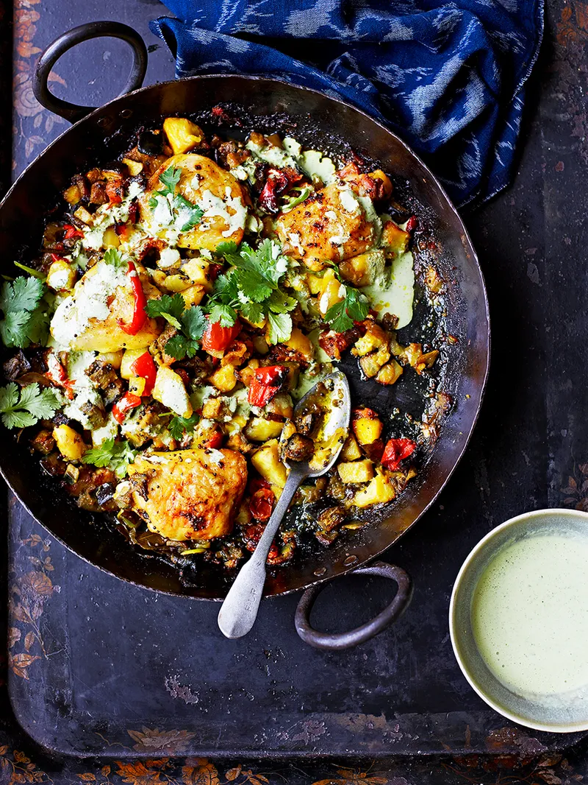

Indian-spiced potatoes with chicken thighs

Ingredients
- 1 large onion
- 800 g potatoes
- 4 ripe tomatoes
- 1 aubergine
- 1 red pepper
- 2 cloves of garlic
- 5cm piece of ginger
- olive oil
- 2 tablespoons mustard seeds
Description
- Preheat the oven to 190°C/375°F/gas 5.
- Peel the onion, then cut into 3cm cubes with the potatoes, tomatoes, aubergine and pepper.
- Put the spuds in a large pan of salted water over a medium heat. Bring to the boil and cook for 10 minutes, then drain in a colander and leave to steam-dry for 3 minutes.
- Tip into a large bowl and mix with the tomato, aubergine, pepper and onion.
- Peel and finely slice the garlic. Peel and finely grate the ginger. Pick the coriander leaves and set aside, then chop the stalks.
- Heat a lug of oil in a large frying pan over a medium heat. Add the garlic, ginger, coriander stalks, mustard seeds, curry leaves and turmeric, and cook for 2 minutes, or until fragrant. Leave to one side to cool slightly.
- Add the spice mix to the veg and potatoes, and tip onto a large roasting tray. Arrange the chicken on top and season.
- Roast in the bottom of the oven for 1 hour, or until the chicken is cooked and the veggies are gnarly.
Home page